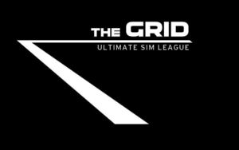

Trade Mark Journal No.2025/020 16 May 2025
WO0000001841128 (41)
Office of origin: European Union Intellectual Property Office (EUIPO)
Date of International Registration:19 December 2024
Date of designation in the UK:
19 December 2024

International priority date claimed: 1 July 2024
(European Union Intellectual Property Office (EUIPO))
(019048411)
- Class 41
- Organization of entertainment events; preparation of entertainment programs for broadcasting; organization of sports and cultural events for leisure purposes; organizing and managing competitions and tournaments; organizing racing competitions; organization of competitions for cultural or educational purposes in the field of motor sports; organizing automobile racing events; organizing automobile races, circuits and rallies, including in the field of e-sports; organization, preparation and conducting of automobile races; organizing competitions and tournaments relating to automobile races; organizing and managing events relating to vehicle races; entertainment services provided on a motorized engine racing circuit, in particular on a track; entertainment services provided on a racing circuit; organizing e-sports events; organizing electronic sports activities [e-sports]; arranging and conducting of e-sports competitions; organizing and conducting competitions on driving simulators; electronic sports services; production of e-sports events; providing electronic sports facilities [e-sports]; operating sports facilities, including in the field of e-sports; entertainment services by means of computer games and video games; entertainment services namely providing online computer games intended for use in virtual environments; automobile racing simulation services in a virtual environment for entertainment purposes; sporting and cultural activities; providing leisure facilities and equipment; provision of entertainment facilities and equipment; motor sports teams and automobile races, including in the field of e-sports; information services concerning motorsports; information services concerning motor vehicle races; information services with respect to sports races, including in the field of e-sports; education; training; coaching [training]; educational services in the form of coaching; training racing drivers, including in the field of e-sports; training for racing drivers, including in the field of e-sports; vehicle piloting training and training course, including in the field of e-sports; training services with respect to piloting; training services with respect to driving vehicles; training services relating to circuit training; e-sports training; training services for sporting activities, including in the field of e-sports; rental of training simulators; online publication services.
MIURA
Representative: VINCZE IP, Deborah Zuckerman de Vincze, 58 rue des Vignes, F-75016 Paris, FRANCE